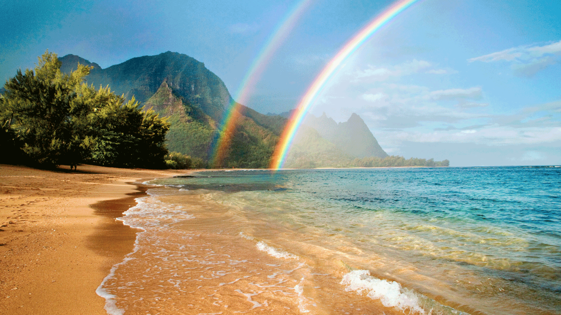
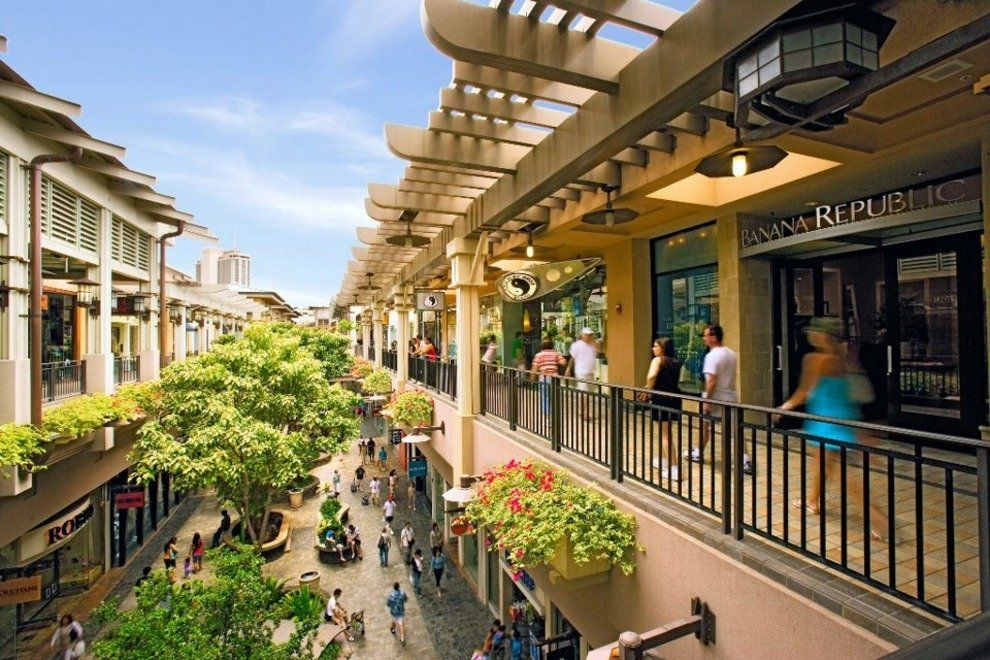
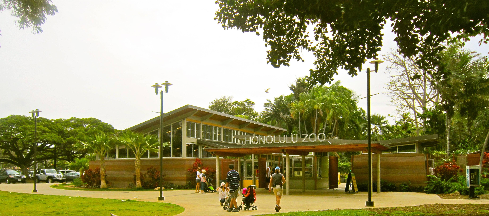
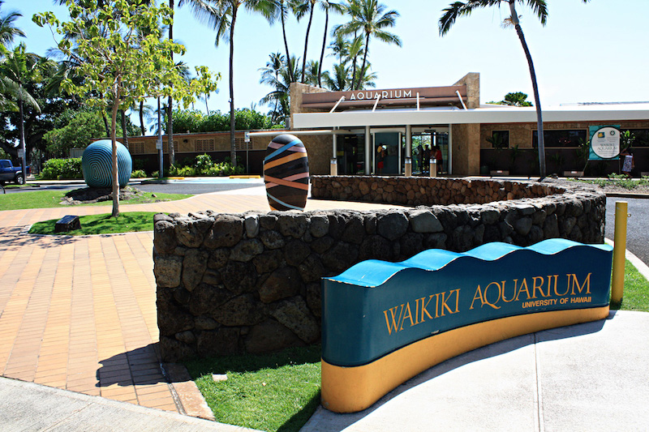

Hawaii
At my first destination: Hawaii, there are three specific places that I want to make sure to visit.
1. Ala Moana Center- This place is known as the largest shopping mall in Hawaii and the seventh largest shopping mall in the U.S., as well as the largest open-air shopping center in the world. It is a beautiful architecture located adjacent to the Ala Moana Beach Park. Although I'm not that into shopping, I would just love to visit the cool structures here and buy some souvenirs while I'm at it. And eat at the restaurants there too!

2. Honolulu Zoo- This zoo featuring over 1,230 animals is built on part of the Queen Kapi'olani Park. I want to come here because they have all sorts of weird animals I've never seen before, such as the River Terrapin, the Mandarin Duck, the Koloa Maoli, the Manu-O-Ku, the Matamata Turtle, and many more. These animals are truly fascinating in the pictures I've seen, and it would be so cool to see them in real life.

3. Waikiki Aquarium- This is the 2nd oldest public aquarium in the United States and it's built next to a living coral reef on the Waikiki shoreline! It is home to more than 490 species of marine plants and animals. I've never really visited any aquariums before in California, so I shall visit this one on the island of Hawaii!
